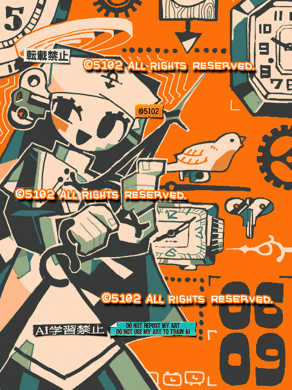

Made with
Tegaki Editor
手書きブログで描いたもの。
昔からあるサイトだけど、このサイトで大真面目に絵を描くのって初めてだ。塗りつぶし、円定規ツール、レイヤーの3種の神器がない状態で、一体どれほどの作品を作れるのか試される道場でしかない。
このエディタはそもそも、円定規ツールがないのが私にとって特に辛すぎる。なのでツールではなく、実際に所持している円定規をタブレットに当てて円を描いた。小学生の時、「うごくメモ帳（DSi）」でまったく同じことをしていたのを思い出す。フリーハンドの円を描くのが私は死ぬほど苦手なのは今も昔も同じだ。
2023/06/09
 手書きブログにハマった（OC）
手書きブログにハマった（OC）